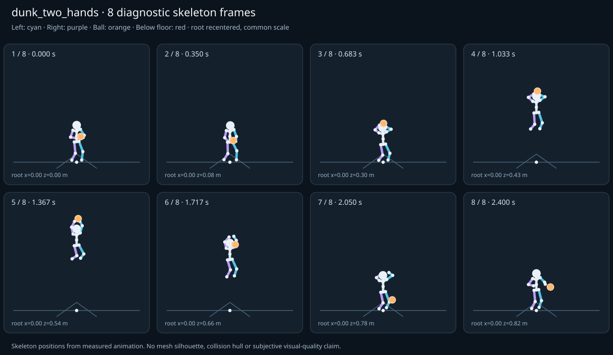

מה הוריד את הציון
- קפיצות פוזה: LeftHand בזמן 1.9667 ש׳; קפיצת סיבוב שקולה 17.026 מעלות ב־60Hz (צהוב)
- כניסה ויציאה מול המתנה: פער ב־יציאה מול המתנה; יחס חריגה 1.8802 (צהוב)
כיסוי: 100%. לא כל מדד חל על כל קליפ; הסטטוס והראיות מפורטים למטה.
שמונה פריימים
תצוגת שלד אבחונית שנבנתה מהפריימים הנמדדים. צד שמאל בכחול, ימין בסגול, כדור בכתום. מיקום השורש ממורכז לצפייה; מיקומו בעולם כתוב בכל פריים.

המדדים והראיות
| מדד | מצב | ערך | ציון | סף ופרטי מדידה |
|---|---|---|---|---|
| החלקת רגליים | ירוק | 0.001 height ratio | 99 | {
"definition": {
"label": "החלקת רגליים",
"unit": "height ratio",
"green": 0.01,
"yellow": 0.035,
"weight": 18,
"description": "Maximum horizontal sole displacement from the first sample of each declared support window, divided by character height. Inferred support is used only when no windows were supplied."
},
"value": 0.000598,
"status": "green",
"score": 98.8,
"evidence": {
"coordinateSpace": "authored reference world (simulation-owned)",
"supportSource": "declared",
"windows": 6,
"samples": 120,
"maxDriftMeters": 0.00101,
"p95SpeedMetersPerSecond": 0.028626,
"worst": {
"bone": "LeftFoot",
"t": 0.716667,
"start": 0.456,
"end": 0.8,
"driftMeters": 0.00101
}
}
} |
| חדירה לרצפה | ירוק | 0.001 height ratio | 98 | {
"definition": {
"label": "חדירה לרצפה",
"unit": "height ratio",
"green": 0.005,
"yellow": 0.02,
"weight": 15,
"description": "Maximum depth of the supplied sole probe points and all skeletal joint centers below the declared floor plane, divided by height. Sole probes are not a mesh collision audit."
},
"value": 0.000552,
"status": "green",
"score": 97.79,
"evidence": {
"samples": 3020,
"floorY": 0,
"probeKind": "declared sole probes plus skeletal joint centers (no mesh surfaces)",
"maxDepthMeters": 0.000932,
"worst": {
"t": 2.05,
"bone": "LeftFoot",
"depthMeters": 0.000932,
"y": -0.000932
}
}
} |
| קפיצות פוזה | צהוב | 1.517 discontinuity ratio | 70 | {
"definition": {
"label": "קפיצות פוזה",
"unit": "discontinuity ratio",
"green": 1,
"yellow": 2.5,
"weight": 18,
"description": "Maximum adjacent 60 Hz-equivalent step: root-relative marker displacement / 0.04 height, root-relative rotation / 15 degrees, or root translation / 0.08 height. A fast continuous action can also exceed this screening threshold."
},
"value": 1.517239,
"status": "yellow",
"score": 69.66,
"evidence": {
"adjacentPairs": 150,
"observations": 2550,
"maxDegrees60Hz": 17.026014,
"maxMarkerStepHeight60Hz": 0.06069,
"maxRootStepHeight60Hz": 0.007181,
"worst": {
"ratio": 1.5172394913081388,
"t": 1.966667,
"previousTime": 1.95,
"bone": "LeftHand",
"markerStepHeight60Hz": 0.06069,
"degrees60Hz": 2.133708
}
}
} |
| חריגות אנטומיות | ירוק | 0 % affected frames | 100 | {
"definition": {
"label": "חריגות אנטומיות",
"unit": "% affected frames",
"green": 0.5,
"yellow": 3,
"weight": 14,
"description": "Percentage of frames with elbow or knee flexion above 165 degrees, neck bend above 80 degrees, or a segment length changing by more than 5%. Optional calibrated hinge checks detect reverse knee flexion above 8 degrees. Conservative marker limits do not diagnose axial joint twist."
},
"value": 0,
"status": "green",
"score": 100,
"evidence": {
"testedFrames": 151,
"affectedFrames": 0,
"checks": 2567,
"maxLimbFlexionDegrees": 125.757033,
"maxRelativeSegmentLengthChange": 0,
"hingeDirectionChecked": true,
"axialTwistChecked": false,
"violations": []
}
} |
| מגע בכדור | ירוק | 0.004 height ratio | 95 | {
"definition": {
"label": "מגע בכדור",
"unit": "height ratio",
"green": 0.015,
"yellow": 0.05,
"weight": 13,
"description": "Maximum absolute distance from the ball surface to the sampled, bone-transformed declared contact point, divided by height. Events are evaluated at their exact declared times by interpolation."
},
"value": 0.003708,
"status": "green",
"score": 95.06,
"evidence": {
"radiusMeters": 0.12,
"samples": 182,
"missed": [],
"contacts": [
{
"t": 0.55,
"bone": "LeftHand",
"gapMeters": 0.006266,
"signedGapMeters": 0.006266,
"centerDistanceMeters": 0.126266,
"contactPoint": [
-0.012023,
1.227247,
0.504744
],
"ballCenter": [
-0.067741,
1.308378,
0.425646
],
"declaredLocalPoint": true
},
{
"t": 0.55,
"bone": "RightHand",
"gapMeters": 0.005871,
"signedGapMeters": 0.005871,
"centerDistanceMeters": 0.125871,
"contactPoint": [
-0.169748,
1.263312,
0.484018
],
"ballCenter": [
-0.067741,
1.308378,
0.425646
],
"declaredLocalPoint": true
},
{
"t": 0.516667,
"bone": "RightHand",
"gapMeters": 0.004263,
"signedGapMeters": 0.004263,
"centerDistanceMeters": 0.124263,
"contactPoint": [
-0.162024,
1.161155,
0.486167
],
"ballCenter": [
-0.060157,
1.202193,
0.428027
],
"declaredLocalPoint": true
},
{
"t": 0.583333,
"bone": "LeftHand",
"gapMeters": 0.002788,
"signedGapMeters": 0.002788,
"centerDistanceMeters": 0.122788,
"contactPoint": [
-0.011072,
1.327761,
0.508298
],
"ballCenter": [
-0.073989,
1.395852,
0.427788
],
"declaredLocalPoint": true
},
{
"t": 0.45,
"bone": "RightHand",
"gapMeters": 0.002776,
"signedGapMeters": 0.002776,
"centerDistanceMeters": 0.122776,
"contactPoint": [
-0.146637,
0.931047,
0.481683
],
"ballCenter": [
-0.046221,
0.979644,
0.430407
],
"declaredLocalPoint": true
},
{
"t": 0.456,
"bone": "RightHand",
"gapMeters": 0.002652,
"signedGapMeters": 0.002652,
"centerDistanceMeters": 0.122652,
"contactPoint": [
-0.147465,
0.957245,
0.484757
],
"ballCenter": [
-0.047189,
1.003068,
0.431014
],
"declaredLocalPoint": true
},
{
"t": 0.483333,
"bone": "RightHand",
"gapMeters": 0.002445,
"signedGapMeters": 0.002445,
"centerDistanceMeters": 0.122445,
"contactPoint": [
-0.153046,
1.055693,
0.488429
],
"ballCenter": [
-0.052544,
1.095621,
0.431002
],
"declaredLocalPoint": true
},
{
"t": 0.583333,
"bone": "RightHand",
"gapMeters": 0.002396,
"signedGapMeters": 0.002396,
"centerDistanceMeters": 0.122396,
"contactPoint": [
-0.184488,
1.365778,
0.470991
],
"ballCenter": [
-0.073989,
1.395852,
0.427788
],
"declaredLocalPoint": true
},
{
"t": 1.05,
"bone": "LeftHand",
"gapMeters": 0.002378,
"signedGapMeters": -0.002378,
"centerDistanceMeters": 0.117622,
"contactPoint": [
0.057109,
2.675742,
0.630189
],
"ballCenter": [
-0.03713,
2.729091,
0.584279
],
"declaredLocalPoint": true
},
{
"t": 0.45,
"bone": "LeftHand",
"gapMeters": 0.002321,
"signedGapMeters": -0.002321,
"centerDistanceMeters": 0.117679,
"contactPoint": [
0.034026,
0.898701,
0.459683
],
"ballCenter": [
-0.046221,
0.979644,
0.430407
],
"declaredLocalPoint": true
},
{
"t": 0.456,
"bone": "LeftHand",
"gapMeters": 0.001692,
"signedGapMeters": -0.001692,
"centerDistanceMeters": 0.118308,
"contactPoint": [
0.032592,
0.923261,
0.466549
],
"ballCenter": [
-0.047189,
1.003068,
0.431014
],
"declaredLocalPoint": true
},
{
"t": 1.216667,
"bone": "LeftHand",
"gapMeters": 0.00145,
"signedGapMeters": -0.00145,
"centerDistanceMeters": 0.11855,
"contactPoint": [
0.100052,
3.189089,
0.642365
],
"ballCenter": [
-0.008554,
3.23411,
0.627134
],
"declaredLocalPoint": true
},
{
"t": 0.516667,
"bone": "LeftHand",
"gapMeters": 0.00113,
"signedGapMeters": 0.00113,
"centerDistanceMeters": 0.12113,
"contactPoint": [
-0.005119,
1.118473,
0.496101
],
"ballCenter": [
-0.060157,
1.202193,
0.428027
],
"declaredLocalPoint": true
},
{
"t": 0.483333,
"bone": "LeftHand",
"gapMeters": 0.000757,
"signedGapMeters": -0.000757,
"centerDistanceMeters": 0.119243,
"contactPoint": [
0.017428,
1.016218,
0.485937
],
"ballCenter": [
-0.052544,
1.095621,
0.431002
],
"declaredLocalPoint": true
},
{
"t": 0.283333,
"bone": "RightHand",
"gapMeters": 0.00038,
"signedGapMeters": -0.00038,
"centerDistanceMeters": 0.11962,
"contactPoint": [
-0.127095,
0.809643,
0.359157
],
"ballCenter": [
-0.03702,
0.888123,
0.35315
],
"declaredLocalPoint": true
},
{
"t": 1.016667,
"bone": "RightHand",
"gapMeters": 0.000343,
"signedGapMeters": -0.000343,
"centerDistanceMeters": 0.119657,
"contactPoint": [
-0.162239,
2.574129,
0.57598
],
"ballCenter": [
-0.043959,
2.592229,
0.576265
],
"declaredLocalPoint": true
},
{
"t": 0.75,
"bone": "LeftHand",
"gapMeters": 0.00033,
"signedGapMeters": 0.00033,
"centerDistanceMeters": 0.12033,
"contactPoint": [
0.000204,
1.413668,
0.558732
],
"ballCenter": [
-0.079073,
1.483592,
0.501241
],
"declaredLocalPoint": true
},
{
"t": 1.016667,
"bone": "LeftHand",
"gapMeters": 0.000327,
"signedGapMeters": 0.000327,
"centerDistanceMeters": 0.120327,
"contactPoint": [
0.035747,
2.522696,
0.63363
],
"ballCenter": [
-0.043959,
2.592229,
0.576265
],
"declaredLocalPoint": true
},
{
"t": 0.95,
"bone": "LeftHand",
"gapMeters": 0.00032,
"signedGapMeters": 0.00032,
"centerDistanceMeters": 0.12032,
"contactPoint": [
0.022774,
2.219818,
0.617184
],
"ballCenter": [
-0.057001,
2.289348,
0.559929
],
"declaredLocalPoint": true
},
{
"t": 0.616667,
"bone": "RightHand",
"gapMeters": 0.000275,
"signedGapMeters": 0.000275,
"centerDistanceMeters": 0.120275,
"contactPoint": [
-0.19564,
1.438818,
0.458139
],
"ballCenter": [
-0.078001,
1.452013,
0.436853
],
"declaredLocalPoint": true
}
],
"contactDetailsTruncated": true,
"coordinateSpace": "authored reference world (simulation-owned)"
}
} |
| כניסה ויציאה מול המתנה | צהוב | 1.88 continuity ratio | 67 | {
"definition": {
"label": "כניסה ויציאה מול המתנה",
"unit": "continuity ratio",
"green": 1,
"yellow": 3,
"weight": 10,
"description": "Worst entry/exit mismatch to the best matching idle phase: RMS marker error / 0.04 height, RMS bone rotation / 25 degrees, or RMS endpoint velocity error / 0.75 height per second. Horizontal root translation is aligned; root height and body pose remain measurable."
},
"value": 1.880161,
"status": "yellow",
"score": 66.8,
"evidence": {
"entry": {
"ratio": 1.8253924982707852,
"t": 0,
"idleTime": 2.166667,
"markers": 17,
"rmsPositionHeight": 0.054225,
"rmsRotationDegrees": 45.634812,
"rmsVelocityHeightPerSecond": 0.031975,
"velocityEvaluated": true
},
"exit": {
"ratio": 1.8801610056888296,
"t": 2.4,
"idleTime": 2.066667,
"markers": 17,
"rmsPositionHeight": 0.054222,
"rmsRotationDegrees": 47.004025,
"rmsVelocityHeightPerSecond": 0.082602,
"velocityEvaluated": true
},
"worstEndpoint": "exit",
"alignment": "horizontal root translation; raw asset poses used when provided"
}
} |
| מהירות גוף מול צעדים | לא חל | — relative speed error | — | {
"definition": {
"label": "מהירות גוף מול צעדים",
"unit": "relative speed error",
"green": 0.2,
"yellow": 0.5,
"weight": 8,
"description": "Relative difference between average root travel speed and the median backward support-foot sweep speed relative to the root. Cadence and implied stride lengths are also reported. In-place clips need an explicit reference travel scenario; stationary actions are not scored as locomotion."
},
"value": null,
"status": "not-applicable",
"score": null,
"reason": "This action is not declared locomotion.",
"evidence": {}
} |
| סימטריה | ירוק | 0 relative mismatch | 100 | {
"definition": {
"label": "סימטריה",
"unit": "relative mismatch",
"green": 0.03,
"yellow": 0.1,
"weight": 4,
"description": "Maximum bilateral segment-length mismatch. Looping locomotion additionally compares reflected half-cycle leg markers; explicit pose symmetry compares simultaneous bilateral markers. One-sided actions retain unscored motion diagnostics, so a valid kick or dribble arm is not penalized for intentional asymmetry."
},
"value": 0,
"status": "green",
"score": 100,
"evidence": {
"mode": "structural",
"modeSource": "structural default for intentional asymmetry",
"structuralMismatch": 0,
"segments": [
{
"segment": "Arm-ForeArm",
"mismatch": 0
},
{
"segment": "ForeArm-Hand",
"mismatch": 0
},
{
"segment": "UpLeg-Leg",
"mismatch": 0
},
{
"segment": "Leg-Foot",
"mismatch": 0
}
],
"motionRmsHeight": null,
"worstMotion": null,
"bilateralPoseRmsHeightUnscored": 0.057309,
"note": "One-sided authored actions are checked for structural symmetry only."
}
} |